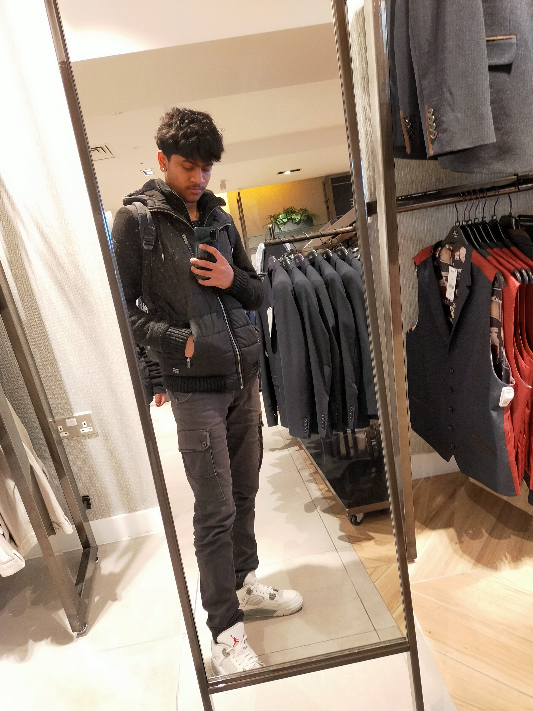

My Resume

Summary:
My aim is to become a web developer who enjoys working on various types of projects and I'm someone who enjoys learning various new things and how I can use that as inspiration for my own work.
Education:
Secondary School: Wembley High Technology College
Dates: September 2018 - July 2023
Current Education: BTEC Level 3 National Extended Diploma in Information Technology at Uxbridge College, Hayes, London
Dates: September 2023 - July 2025 (Expected)
Skills:
- Programming Languages: HTML, Experience with C++, still learning
- Web Development: HTML and CSS experience with a project shown below
- Ability to process and interpret data and display this in a clear manner
- Teamwork, experience from playing a variety of team sports including cricket and football as well as creating projects within my college class and working effectively as a team.
- Communication skills, I would enjoy engaging in team discussions to share my opinions on aspects of the company that are intriguing and useful as well as pinpointing and figuring outwhat can be improved to boost productivity and efficiency.
- Active listener, I enjoy asking questions and comprehending information received and responding accordingly.
- Computer skills, I thoroughly enjoy typing up documents and I believe this could also help in another aspect of email management which can be included in this category.
- Management, I enjoy staying organised and completing tasks in order, the following ideas are some examples of management skills that I am interested in, decision-making, an essential aspect of business, project planning and team communication.
- Problem-solving, I enjoy finding out solutions to problems effectively and this skill is essential in any field, be it work, sports or education. I enjoy collaboration work with friends in college on projects and enjoy communicating with others to find the solution of specific problems and issues.
Awards:
- Pearson BTEC Level 1/Level 2 Tech Award with Grade Merit at Level 2 at Wembley High Technology College (The Academy), July 2022
Hobbies and Passions
Contact Me